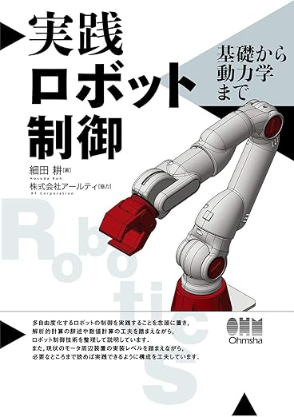
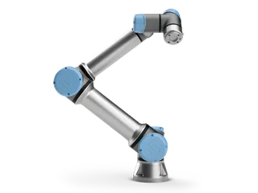
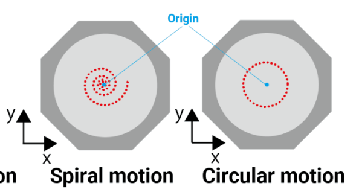
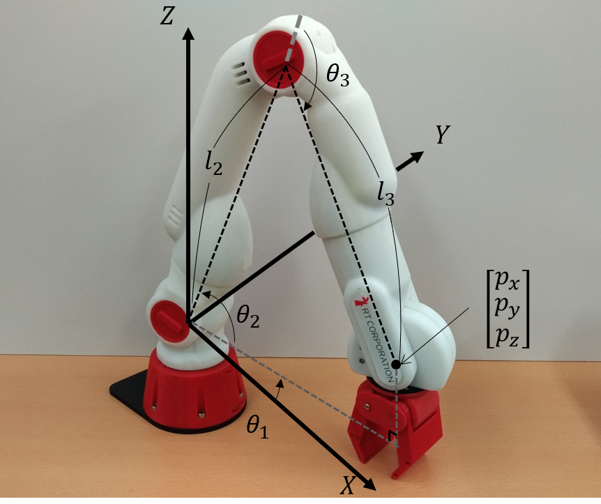
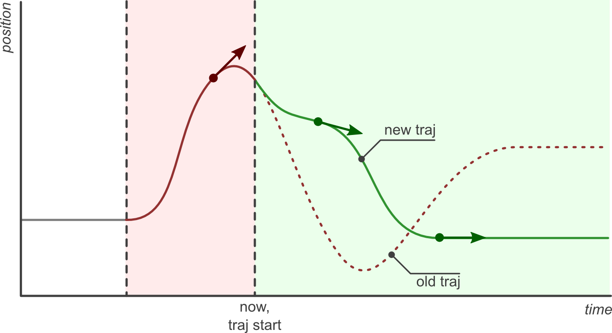
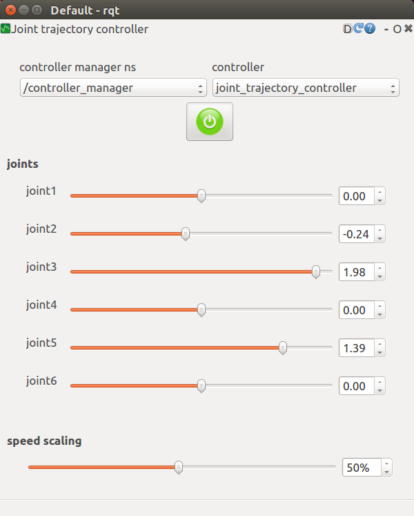
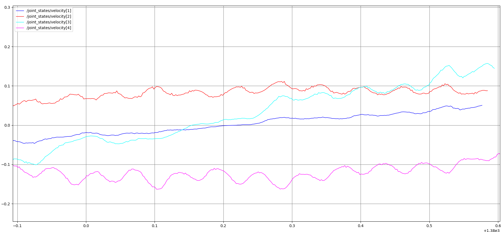
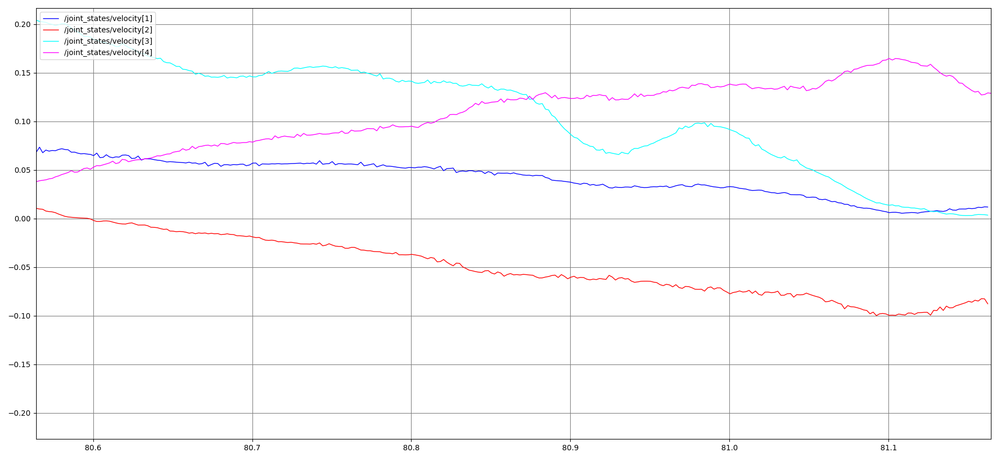
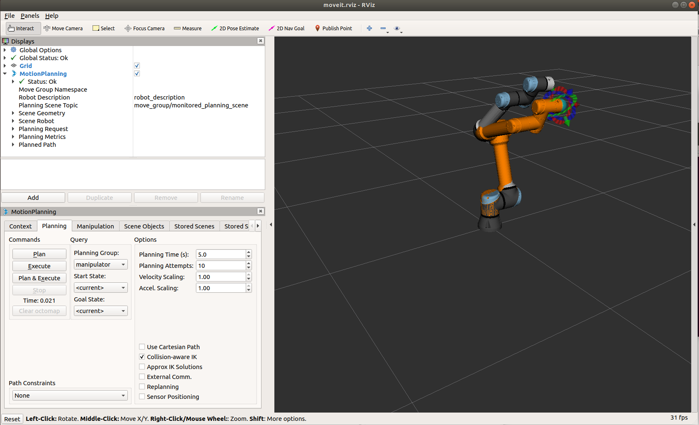

ゼロからのROS2
位置制御とモーションプランニング
大阪大学 中島優作
ロボット制御参考資料
本スライド(実践)、教科書(理論)の併用がおススメ

イラストが豊富で分かりやすいながらも基礎的な数式を扱っていて最初に読むのにちょうど良い
最も基本の位置制御まで扱っている

教科書「ロボット制御基礎論」を現在版にブラッシュアップ、理論的な詳しさと実装面までの手引きが充実
ROSを使う利点
ROSコントローラ
- PC上で完全に動作を計算して実行できる
- 軌道制御などをさせたいときはこっち
付属コントローラ
- ロボット付属のコントローラで動作を計算・実行
- 初期姿勢と最終姿勢は指定できるが中間の動きは指定できない
- 直線など単純な動きならこちらで問題ない
本スライドでは軌道制御の実装を扱います
- 実装方法1: JointTrajectoryController
障害物回避なしのモーションプランニング
常に接触するタスクで便利 - 実装方法2: MoveIt
障害物回避ありのモーションプランニング
ピッキングなどで便利
JointTrajectoryControllerってどういう意味？
ROSのコントローラの命名則↓
アーム制御則は組合せ
| ロボット関節の制御 | 指定したい座標系 | ユーザーが実現したい制御 |
|---|---|---|
| 位置 | 関節座標系 | 位置 |
| 速度 | 直交座標系 | 速度 |
| トルク | 力(トルク) |
ROSコントローラ命名則
position_controllers/JointTrajectoryController
よく使うROSの関節空間の
アームコントローラ
参考: joint_trajectory_controller.md
- position_controllers/JointTrajectoryController
- velocity_controllers/JointTrajectoryController
- effort_controllers/JointTrajectoryController
よく使うROSの直交空間の
アームコントローラ
position_controllers→velocity_controllersでも利用可能
- position_controllers/CartesianMotionController
- position_controllers/CartesianForceController
- position_controllers/CartesianComplianceController
市販だと位置/速度制御が多い

位置/速度制御
position_controllers, velocity_controllersのみ使用可
- Universal Robot
- DENSO
- その他多数
トルク制御できるロボットもある

トルク制御
effort_controllersも使用可
- Franka Robotics
- KUKA
ロボットドライバの準備
UR用コントローラ
JointTrajectoryController
- ROSを使ったロボットアーム制御で一般に使われるコントローラです
ScaledJointTrajectoryController
- URのタブレットの速度スライダーに対応したUR専用コントローラ
- 例えば速度スライダーが1%の場合、これがないとROSは100%の速度で計算し制御がずれます
今回は UR を使用するため、UR 用コントローラとして ScaledJointTrajectoryController を利用します。
[復習]URのパッケージを取得
- ここではユニバーサルロボット(UR)を扱います
- URのパッケージ詳細→ Universal_Robots_ROS2_Driver
- ※The Constructを使っている人は環境立ち上げの度にインストールが必要なので注意
# キーが期限切れの場合があるので念のため更新します
curl -s https://raw.githubusercontent.com/ros/rosdistro/master/ros.asc | sudo apt-key add -
sudo apt update &&
# ユニバーサルロボットのROSパッケージをインストールします
sudo apt install ros-${ROS_DISTRO}-ur
# ユニバーサルロボットのROSパッケージの動作確認
ros2 launch ur_description view_ur.launch.py ur_type:=ur5e
[復習]ROS 2 control を更新
Mock Components が起動しない場合、controller_manager と
realtime_tools の不整合で落ちることがあります。まず関連パッケージを更新します。
sudo apt update &&
sudo apt install --reinstall \
ros-humble-realtime-tools \
ros-humble-controller-manager \
ros-humble-ros2-control \
ros-humble-ros2-controllers \
ros-humble-joint-state-broadcaster \
ros-humble-joint-trajectory-controller \
ros-humble-ros2controlcli
xacroファイルの作成更新
起動用Launchの作成
起動用Launchの作成2
動作テスト
- ビルドします
cd ~/ros2_ws
colcon build
source install/setup.bash
ros2 launch ros_study ur5e_bringup_for_real_robot.launch.py
ros2 run rqt_joint_trajectory_controller rqt_joint_trajectory_controller
GUIのスライダーを動かして、RViz上のロボットが動くことを確認できれば成功です。
JointTrajectoryControllerによるアーム制御の基本
JTCの実装4ステップ
- 手先のwaypoints決定
- 逆運動学
- 軌道・軌跡生成
- 実行
step1:waypointsの計算

- 位置とクオータニオンの7次元を並べてwaypointsを作成
- クオータニオンのSlerpを活用すると動作が滑らかになる
手先姿勢の表現
位置(position)+向き(orientation)=姿勢(pose)

- 位置：XYZで表す
- 向き：オイラー角 or クオータニオン
- ROSでは内部計算でクオータニオンを使う
実用上は最初と最後の姿勢をオイラー角で指定、クオータニオンに変換後に補完してROSに渡す
オイラー角による表現と課題
- 利点
- 直観的
- 3つの角度（Roll, Pitch, Yaw）で表現
- 課題
- ジンバルロックを避ける必要
- 軌道補間で不自然な動きになることがある
クォータニオンによる表現
- 利点
- ジンバルロックが発生しない
- 回転軸と回転角で表現
- 数値的に安定
- 課題
- 直観的理解が困難
- 4つの要素（w, x, y, z）で表現
- 正規化が必要
クォータニオン補間の利点
- SLERP (Spherical Linear Interpolation)
- 球面上の最短経路で補間
- 角速度が一定
- 滑らかな軌道生成
- オイラー角補間との比較
- より自然な回転軌道
- ジンバルロック回避
- 計算効率が良い
クォータニオンを扱う方法
- TF
- ROS標準
- ROS専用の型を使えるのが便利
- Scipy Rotation
- ROS不要でクオータニオンの計算が可能
- SLERPもあるので僕はよく使う
姿勢の表現 - オススメの実装
- 最初と最後の姿勢は直観的にわかりやすいオイラー角で指定
- 最初→最後の間のwaypointsの計算ではオイラー角→クォータニオンに変換してSlerpで補完
- ROSはクオータニオンしか扱えない点に注意
step2:逆運動学(IK)

XYZでロボットの手先姿勢を指定したい
ただ、動かせるのはロボットの関節
そこで手先姿勢→ロボットの関節の計算をする(逆運動学,IK=InverseKinematics)
逆運動学の解き方(IKソルバー)
- 解析解
- 特定のロボット構造に基づいた数式
- 関節角度を直接計算
- 数値解
- 最適化計算による近似解法
- 左のアプリのように徐々に近づける
現在は汎用性が高く速度も精度も十分になったので数値解を使うことが多い
MoveItのIKソルバーの利用
MoveItのIKソルバーをROS Serviceを介して使うのが簡単
通信時間がかかるので大量のIKには使いにくい、数点のIKなら実用的
Pythonで使えるIKソルバー
大量のIKを解く際は以下のようなIk用ライブラリを直接使うのが良い
- TRACK-IK-PYTHON(オススメ) - MoveItでも使われている手法, 安定性と計算速度のバランスが良い
- Pinocchio - 最先端の剛体アルゴリズムを実装したライブラリ, Franka Roboticsのライブラリでデフォルト
軌跡・軌道生成
- 軌跡：逆運動学で得た解, 時間情報なし
- 軌道：時間情報を加えたもの
- JointTrajectoryControllerでは、少なくともPositionとTimeFromStartを渡すと軌道計算と実行が可能
- 振動を抑える場合は厳密な速度, 加速度が必要だが、実用上はpositionだけでも問題ないことも多い
※軌跡と軌道の言葉の定義は書籍「実践 ロボット制御」での定義を使っています
JointTrajectoryの送信方法
- Topic(こっちは簡易的、もしくは連続でGoalを 送る場合)
- /joint_trajectory_controller_name/commandに送信
- 送ったら直ちに動作を実行、途中で止められない
- Action(基本はこっちを使う)
- /joint_trajectory_controller_name/FollowJointTrajectoryに送信
- 目標到達までの状態確認や途中変更も可能
Actionで送った場合の利点

参考資料: joint_trajectory_controller.md
- 途中でキャンセルしたり、軌道を変更して滑らかに繋ぐことができる
- 即時に反映したいとき以外は基本的にActionを使うべき
JointTrajectoryControllerのテスト方法

- rqt_joint_trajectory_controller_guiが便利
- JointTrajectoryControllerが正常に動いているのかをテストするときなどに使える
JTCの実装例
| 目標姿勢の決定 | ：Scipy Rotation Module |
| 逆運動学 | ：MoveIt IK Solver(TrackIK) |
| 軌道生成 | ：JointTrajectoryController |
| 軌跡生成 | ：JointTrajectoryController |
| 実行 | ：JointTrajectoryController |
JointTrajectoryControllerの実装
関節を指定して補間するだけのシンプルなデモ
ros_study/ros_study/jtc_demo.pyに以下を保存
entry_points を追加
※スライドでは設定済みのファイルです
buildと実行
cd ~/ros2_ws
colcon build
source install/setup.bash
ros2 run ros_study jtc_demo
JTC + IKの実装
ros_study/ros_study/jtc_with_ik_demo.pyに以下を保存
buildと実行
cd ~/ros2_ws
colcon build
source install/setup.bash
ros2 run ros_study jtc_with_ik_demo
JointTrajectoryControllerによるアームの速度・加速度制御
速度・加速度制御は必要か？
ここまで紹介した手法の課題
- 急加速、急減速
- 動作に振動が出やすい
軌道補間の方法
主な補間方法
- 線形補間 - 最も単純
- 3次スプライン - 滑らかな位置と速度
- 5次スプライン - 滑らかな位置、速度、加速度
- 台形 - 動作が速い
※教科書で出てくる時間多項式とスプラインは等価です
2点→時間多項式, 複数点→スプラインという違いです
補間方法の比較まとめ
| 補間方法 | 計算コスト | 滑らかさ | 連続性 | 適用場面 |
|---|---|---|---|---|
| 線形補間 | 低 | 低 | C⁰ | 高速動作・簡単制御 |
| 3次スプライン | 中 | 中 | C¹ | 一般的なロボット制御 |
| 5次スプライン | 高 | 高 | C² | 高精度作業・振動抑制 |
| 台形補間 | 低 | 中 | C¹ | 高速動作・効率重視 |
迷った場合は3次スプラインが無難
関節速度計算はなくても良い

waypointsが少ないと波打つ

waypointsを増やす滑らか
- 2点であれば「速度 and/or 加速度を0」
- 3点以上であっても十分細かいwaypointsをとれば「速度 and/or 加速度を0」でも割となめらか
※ ただし全点で速度0 ＝ 全点で一度止まる動き。詳しくは次章「軌道の滑らかさ」
それでも厳密な速度計算が必要という方は↓
速度・加速度つき JTC 実装
関節速度の計算方法
ヤコビアンとは
- 関節速度 → 手先速度
- 微分の連鎖律から導出
- 関係式：v = J * q̇
- v: 手先速度ベクトル（6次元）
- J: ヤコビアン行列（6×n）
- q̇: 関節角速度ベクトル（n次元）
逆ヤコビアンによる手先速度の計算
逆ヤコビアン
- 手先速度 → 関節速度
- 式：q̇ = J⁻¹ * v
Jが正方行列でない場合は？
- 疑似逆行列：J⁺ = Jᵀ(JJᵀ)⁻¹
- 特異点対策：Damped Least Squares
- 冗長性解決：Null Space制御
軌道の滑らかさ：ブレンド半径からROS実装まで
ティーチングペンダントの「ブレンド半径」と ROS の軌道生成は
同じ式 an = v² / ρ でつながっている
PTP / CP
movej / movel / movec
ブレンド半径
なぜ丸めるのか
C⁰ / C¹ / C²
とジャーク
幾何 → 時間則
→ 補間
①② は ロボットアーム入門 ~ロボットの基本操作~ の第9章で扱った内容です
復習：止まるか丸めるか
角（ρ = 0）は止まるしかない／丸めれば vmax = √(amax ρ) アプリ全画面
幾何の滑らかさ(G)と時間の滑らかさ(C)を分ける
G：幾何連続性
経路の形の滑らかさ
どんな速さでなぞっても変わらない
C：時間連続性
時間の関数 p(t) としての滑らかさ
モータが実際に受け取る量
速度 > 0 で通過するとき、Gk の経路からは Ck の軌道までしか作れない
連続性の階層
| 経路の幾何 | 達成できる時間連続性 | 不連続になる量 | 物理的な意味 |
|---|---|---|---|
| G⁰ のみ（接線が折れる） | C⁰ | 速度 | 通過不可。止まるしかない |
| G¹（接線連続：円弧ブレンド） | C¹ | 加速度 | 通れる。トルクが段差状に飛ぶ |
| G²（曲率連続：クロソイド等） | C² | ジャーク | トルクが連続。実用上の合格線 |
| G³ | C³ | ジャークの微分 | 高速・柔軟な機構で意味を持つ |
C¹ は「止まらずに通れる」最低条件
「振動させない」条件は C²（＝ G²）
なぜ G¹ では C² にできないのか
- 直線 → 円弧の境目で曲率 κ = 1/ρ が段差状に跳ぶ
- an = v²κ を連続に保つには v² が逆向きに跳ぶ必要がある
- 速度 v は連続なので不可能。例外は v = 0 のときだけ
- → 曲率の不連続は加速度の段差を強制する
加速度 ＝ 時間則 ＋ 幾何
p″ = s″ t（時間則・接線方向）＋ (s′)² κ n（幾何・法線方向）
アプリ全画面 経路が完璧な円弧でも、時間則が台形なら加速度は段差。逆も同じ
なぜジャークまで気にするのか
段差で変わる
ステップ状に変わる
有限剛性＝ばね
残留振動
- ステップは広い周波数成分を持つ → 第1固有モードを必ず叩く
- 振動が収まるまで待つ → 位置精度とサイクルタイムの両方を失う
- モータ電流もインダクタンスでステップに追従できない → 追従誤差
- → ジャークを制限した Sカーブ プロファイルが使われる理由
台形速度 vs Sカーブ
アプリ全画面 Sカーブは動作時間が少し伸びるが、整定まで含めると速く終わることが多い
ROS の軌道生成は3段構造
① 幾何パス
OMPL / compute_cartesian_path
出力：関節空間の密な点列
（時間情報なし）
✓ 衝突回避・経路の形
✗ 角があれば残る（G⁰）
② 時間パラメータ化
TOTG（＋ Ruckig で平滑化）
出力：各点に時刻・速度・加速度
✓ 速度・加速度の上限
✗ TOTG はジャーク無制限
③ 補間
joint_trajectory_controller
入力：JointTrajectory
点と点の間を多項式でつなぐ
✓ 5次なら節点で C²
✗ 点の情報が欠けると次数が落ちる
この流れ自体は標準的な正攻法。ただしチェックすべき点が5つある↓
チェック①：幾何精度は密度で解決できる
e ≈ Δ² / (8R)
- 直交空間で密にサンプリング → IK → 関節空間でつなぐ
- ずれは弦と弧の差で Δ² に比例して縮む
- 例：Δ = 10 mm, R = 100 mm → e ≈ 0.13 mm
- MoveIt の compute_cartesian_path（eef_step）がやっていること
チェック②：5次が本当に5次になっているか
| JointTrajectoryPoint に入れた情報 | 実際の補間 | 連続性 |
|---|---|---|
| positions のみ | 線形 | C⁰（速度が飛ぶ） |
| positions + velocities | 3次（Hermite） | C¹（加速度が飛ぶ） |
| positions + velocities + accelerations | 5次 | C² |
point = JointTrajectoryPoint()
point.positions = q
point.velocities = dq # 空だと線形補間
point.accelerations = ddq # 空だと静かに3次に落ちる
- 5次の6係数 ＝ 両端の 位置・速度・加速度（3条件 × 2）→ C² でつなぐため
- 点が密なほど、次数が落ちたときの段差が頻繁に出る
補間次数を比べる
アプリ全画面 同じ waypoint でも、点に入れる情報で加速度の形がまったく変わる
※ 5次でも節点で連続なのは加速度まで。ジャークは節点で折れる（実用上は十分）
チェック③：時間パラメータ化はジャークを抑えているか
- MoveIt 2 の既定 TOTG（Time-Optimal Trajectory Generation）は時間最適
- 時間最適 ＝ 常にどこかの制約が飽和 ＝ 加速度は bang-bang
- 5次で C² につないでも、入力の加速度が飽和値を行き来すれば急変する
- ジャークを抑えたいなら Ruckig（MoveIt 2 の AddRuckigTrajectorySmoothing）
チェック④：密にしすぎても滑らかにはならない
- 制御周期より短い区間は意味がない
- UR：CB3 系 125 Hz（8 ms）、e-Series 500 Hz（2 ms）
- 区間が極端に短いと5次多項式の係数が悪条件になり、わずかな不整合が高周波成分になる
- 密にするほど、節点の不連続が高周波になるだけ
- 滑らかさを決めるのは密度ではなく、節点での連続性の次数
※ 前章の「速度・加速度を 0」にする方法は、全点で止まる（全点が r = 0 の停止点）のと同じ。補間次数のアプリで確認できます
チェック⑤：角は密にしても消えない
- 直交経路に鋭い角があると、密にサンプリングしても角は点と点の間に残る
- 時間パラメータ化は加速度制約を守るので、角で自動的にほぼ停止まで減速
- ＝ ブレンド半径を使わない代わりに、角で勝手に遅くなる
- 速度を保ちたいなら、幾何の側で自前のブレンドやスプラインを入れる
「精度と速度の交換」はレイヤーを変えても消えない
おまけ：特異点
- 直交空間で滑らか ≠ 関節空間で滑らか
- 特異点の近くでは q′ = J⁻¹ v の関節速度が発散する
- compute_cartesian_path に jump_threshold があるのはこのため
- 密な IK サンプリング方式で一番危険なのはここ
ヤコビアンと特異点は「速度・加速度制御」の章のアプリで確認できます
実務上の判断
ジャークはまず問題にならない
- 低速の動作
- 軽いペイロード
- 例：多くのラボオートメーション
ジャークが効いてくる
- 高速の動作
- 長い・柔らかいペイロード
- 液体を持っている：液面のスロッシングが固有振動を持つ → こぼれ・液滴残り
まとめ：ペンダントのパラメータと ROS の実装は同じ話
| レイヤー | UR（ティーチングペンダント） | ROS |
|---|---|---|
| 経由点の扱い（幾何） | ブレンド半径 r | 自前でブレンド・スプラインを入れる （入れなければ角で減速） |
| 時間則 | コントローラ内部で自動 | TOTG（必要なら Ruckig で平滑化） |
| 補間 | コントローラ内部で自動 | JTC：点に入れた情報で次数が決まる |
- どれも an = v² / ρ から出てくる
- C¹ は「止まらずに通れる」最低条件、振動させない条件は C²
- C² には幾何と時間則の両方が滑らかである必要がある
MoveIt GUIによるアーム制御
MoveItとは
- 障害物を避ける動作を自動生成
MoveIt 3 Steps
- 目標姿勢を指定
- モーションプランニング
- 実行！
ステップ1:手先姿勢の決定
姿勢をGUIで指定

- 目標手先を設定してplanningや実行が可能
Step2:モーションプランニング

MoveItで使える手法一覧
https://opensource-robotics.tokyo.jp/?p=4313
- 産業用モーション(PTP,LIN,CIRC)
- Pilz Industrial Motion Planner
- サンプリングベース
- OMPLの中の手法
- 最適化ベース
- CHOMP
- STOMP
サンプリングベースの手法(RRT)
MoveItのデフォルト
- ランダムにパスを伸ばして障害物がなかったら採用、を繰り返す
- 実際は後処理をかけてスムーズに
- スタートとゴールから同時に伸ばし収束性を良くしたRRT Connectが使われる
最適化ベースの手法(CHOMP)
- コスト：障害物の距離を遠く、軌道の距離を短く、など
- 最適化：勾配降下法
- コストの設計と初期軌道の引きの良さによって収束時間や得られた軌道の良しあしが決まる
- 障害物が多い実用場面では正直使いにくい
最適化ベースの手法(STOMP)
- コスト：障害物の距離を遠くなど
- 最適化：確率的最適化
- 軌道は最適化で決めるけど、最適化はサンプリングベースというハイブリッドっぽい
- 滑らかさはCHOMPより劣るが解が収束しやすく実用上は使いやすい
MoveIt スクリプトによるアーム制御
MoveIt2のPython対応（MoveItPy）
※Pythonは現状おすすめしない、使うならC++
- 公式にMoveItPyが提供されている
- Humbleでは未実装で、Jazzy以降（Ubuntu 24.04以降）でのみ利用可能
- 単純なラッパーではなく、MoveItの各種パラメータを一通り設定する必要があるので使いにくい
C++用のROS packageの作成
cd ~/ros2_ws/src
ros2 pkg create --build-type ament_cmake ros_study_cpp
src/ 配下で package を作成します
同梱workspaceを使う場合はすでに含まれているので不要です
MoveIt2(C++)の最小実装
CMakeLists.txtを修正
ビルドと実行
- ビルドします
cd ~/ros2_ws
colcon build
source install/setup.bash
ros2 run ros_study_cpp ur_moveit_demo_cpp
MoveIt Planning Sceneによる障害物設置
MoveIt Planning Scene の設置方法
GUIで追加する場合
- RViz の MoveIt 画面で Planning Scene を確認しながら障害物を追加・調整します
- 形状や位置を見ながら試行錯誤できるので、寸法合わせや初期確認に向いています
スクリプトで追加する場合
/planning_sceneに CollisionObject を publish して障害物を追加します- launch に組み込めるので、毎回同じ環境を再現できます
- 実機運用では「テーブルや乳鉢を自動で読み込む」構成にしておくと扱いやすいです
- この講義では、再利用しやすいように
load_planning_sceneノードとして実装します
追加する CPP コード1: load_planning_scene.cpp
追加する CPP コード2: load_planning_scene_main.cpp
追加する HPP コード: load_planning_scene.hpp
設定ファイル: planning_scene_config.yaml
Launchファイル
ビルドと実行コマンド
- 乳鉢 mesh は
ros2_ws/src/ros_study/meshes/asone_agate_mortar_80x100x36.stlとして保存しておきます - ダウンロード: asone_agate_mortar_80x100x36.stl
cd ~/zero_ros/ros2_ws/src/ros_study/meshes
cp ~/Downloads/asone_agate_mortar_80x100x36.stl .
- ワークスペースをビルドします
cd ~/zero_ros/ros2_ws
colcon build --packages-select ros_study_cpp ros_study
source install/setup.bash
- 実機用 launch を起動すると Planning Scene も自動で読み込まれます
ros2 launch ros_study ur5e_bringup_for_real_robot.launch.py \
robot_ip:=192.168.58.42 \
use_mock_hardware:=false \
use_moveit:=true
デバッグのヒント：waypoints表示
デバッグのヒント：目標姿勢の表示
TFについて
- TF = Transformの略
- ROS標準搭載のシステムで、座標変換と座標の時間管理の2つの機能がある
- 実装においてTFというと、実際は改良版のTF2のことを指す